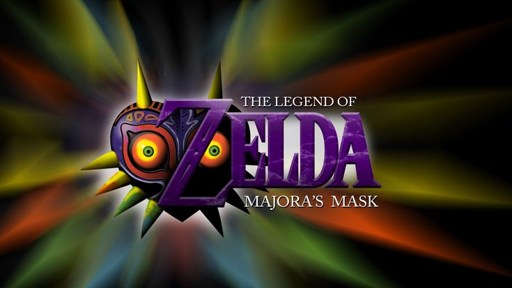

Mis Zelda's Favoritos
The Legend Of Zelda Twilight Princess

El juego comienza con Link, un joven campesino que vive pacíficamente con sus amigos en un pequeño
pueblo
llamado Ordon. Repentinamente son atacados por bestias, las cuales terminan secuestrando a los
amigos de
Link y a su yegua, Epona. Pese a que Link intenta detener el peligro, este termina inconsciente.
Durante
su
inconsciencia, es arrastrado y
llevado por una de estas bestias hacia un lugar extraño llamado Crepúsculo, además de que es
transformado en
un lobo debido a que su forma hyliana es afectada. Durante su aventura en Crepúsculo conoce a Midna,
una
misteriosa criatura perteneciente a la raza Twili que decide acompañar a Link. Juntos escapan de las
mazmorras y se encuentran con la Princesa Zelda,
quien revela que el Reino de Hyrule ha sido derrocado por Zant, un poderoso Twili que planea
fusionar
Hyrule
con Crepúsculo.
A partir de aquí, Link, con la habilidad de transformarse en un lobo, se embarcará en una aventura
en la
que
no solo intentará detener el mal, sino que también descubrirá información importante acerca de Midna
y
sus
enemigos.
The Legend Of Zelda Ocarina Of Time

El juego se desarrolla en el reino de Hyrule. Un joven llamado Link se embarca en una búsqueda para
evitar
que el malvado Ganondorf, el antagonista principal de saga de Zelda, obtenga la legendaria
Trifuerza,
una
reliquia mágica de poder omnipotente, un evento predicho por la profecía Princesa Zelda. Debido a
las
circunstancias imprevistas, Ganondorf obtiene con éxito parte
de la Trifuerza. Al viajar adelante y atrás en el tiempo utilizando la mítica Espada Maestra, Link
debe
reunir los seis medallones necesarios para
derrotar a Ganondorf y restaurar la paz a Hyrule.
The Legend Of Zelda Majoras Mask

El juego presenta una historia inusual para un título de Zelda. En lugar de transcurrir en la tierra
de
Hyrule como la mayoría de los juegos de Zelda, Link tiene su aventura en la tierra de Términa, un
mundo
paralelo a Hyrule, con muchos personajes físicamente idénticos a los personajes de Ocarina of Time.
Una
misteriosa máscara conocida como la Máscara de Majora ha sido robada por un
ser malicioso conocido como Skull Kid, y la está utilizando para hacer caer la Luna sobre la tierra
de
Términa para destruirla. Link debe detener la destrucción dentro de tres días.
The Legend Of Zelda Breath Of The Wild

Transcurren cien años y Link despierta sin memoria de la cámara en un reino posapocalíptico
devastado,
al
salir del santuario conoce a un anciano que se revela a sí mismo como el espíritu del rey Rhoam. El
rey
le
explica que Zelda ha estado en una batalla en
el castillo de Hyrule y que su poder se está desvaneciendo, por lo que le ruega a Link que derrote a
Ganon
antes de que se libere y destruya el mundo. Tras la petición del rey, Link emprende un viaje a
través de
todo Hyrule para recuperar sus memorias. Con la ayuda de las tribus del reino aborda las bestias
divinas
para derrotar a las manifestaciones de Ganon que derrotaron a los campeones cien años antes y
liberar
sus
espíritus. Después de obtener la Espada Maestra, Link se dirige al castillo de Hyrule para derrotar
a
Ganon
con la ayuda de las bestias divinas.
The Legend Of Zelda Tears Of The Kingdom

Tras los acontecimientos de The Legend of Zelda: Breath of the Wild, la princesa Zelda junto a Link
exploran
los cimientos del castillo de Hyrule, en el que encuentran una sala donde reposa un cadáver
momificado.
Después de que el cadáver tome vida y se levante, ataca a Zelda y Link, dejando a este último
malherido
y
rompiendo el filo de su Espada Maestra. Tras ello desata su poder rompiendo el
sello que lo mantenía retenido y se eleva el castillo de Hyrule. Zelda sufre una caída mientras el
sitio
se
derrumba y desaparece mágicamente. Link deberá encontrar a la princesa Zelda por cielo, tierra y
subsuelo y
así salvar al reino de Hyrule del resurgido Ganondorf, el rey demonio.
Gracias por leer